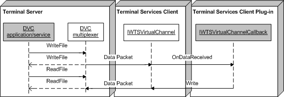

Writing channel data by using a dynamic virtual channel (DVC) is symmetric for both the Remote Desktop Session Host (RDÂ Session Host) server and the client. The writing of channel data is implemented by the Write method of the IWTSVirtualChannel interface.
The following illustration shows the sending and receiving of the data packet between the DVC client and server (DVC plug-in).

Â
Â